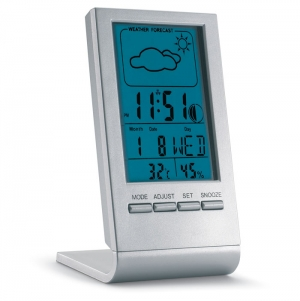
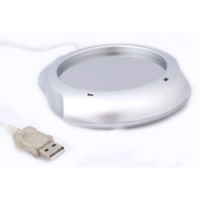

Tipos e variantes
Cabos, carregadores e baterias externas
USB Type-C não é sinónimo de USB Power Delivery nem de uma versão de transferência de dados. Separe conector de capacidades. ↗
Aspetos que distinguem as opções: Entrada, saída, protocolo, cabo necessário e dispositivos suportados.
Contexto possível: Carregamento ou dados conforme a função documentada.
Altifalantes e áudio
O nome da ligação não descreve sozinho controlos, autonomia ou experiência de audição.
Aspetos que distinguem as opções: Ligação, alimentação, controlos e emparelhamento.
Contexto possível: Escuta individual ou partilha de som em ambiente adequado.
Suportes sem eletrónica
Podem resolver posicionamento sem carregar nem comunicar com o dispositivo.
Aspetos que distinguem as opções: Encaixe, estabilidade, ajuste e uso com capa.
Contexto possível: Secretária, videochamadas e organização.
Cabos de ligação
O encaixe físico é apenas o primeiro passo. Separe o conector de cada ponta, o transporte de energia, a transferência de dados e uma eventual saída de imagem. O formato USB-C não identifica por si só estas funções. ↗
Aspetos que distinguem as opções: Comprimento útil, pontas, função documentada e espaço junto às portas.
Contexto possível: Ligação entre os equipamentos efetivamente utilizados.
Acessórios para computador e telemóvel
Tapetes, capas e bolsas organizam ou acompanham o equipamento; adaptadores e concentradores acrescentam ligações quando suportadas. Não trate um acessório passivo como um dispositivo eletrónico.
Aspetos que distinguem as opções: Medidas, recortes, ventilação, acesso a comandos e portas necessárias.
Contexto possível: Secretária, trabalho móvel e arrumação.
Usos e contextos
- Identifique os dispositivos e a tarefa: carregar, comunicar, ouvir ou apoiar.
- Peça documentação e teste a combinação real se depender de uma função específica.
O que comparar
- Porta, cabo e dispositivo devem suportar a função pretendida em ambas as extremidades.
- Para carregamento sem fios, verifique a identificação e certificação no registo público do Wireless Power Consortium; não atribua certificação por uma fotografia. ↗
- Separe autonomia documentada de capacidade nominal da bateria e registe as condições declaradas.
- Para áudio, ensaie os comandos, a captação de voz se existir microfone e o método de ligação no ambiente previsto. Uma função de reprodução não implica função de chamada.
- Registe a combinação completa para carregamento: dispositivo, fonte de alimentação, cabo e função pretendida. Uma porta visualmente igual pode ter capacidades diferentes. ↗
Materiais e componentes
São possibilidades a identificar no artigo escolhido. Confirme a composição de cada parte; os materiais de uma variante não descrevem toda a família.
Carcaça e botões
plásticos
Separar invólucro e eletrónica; confirmar textura, revestimento e peças móveis.
Invólucro ou placa exterior
metais
Identificar acabamento e área livre; não inferir dissipação térmica pela aparência.
Painel decorativo
madeira · bambu
Avaliar o painel; a decoração não descreve os circuitos interiores.

Zonas de personalização
- Face exterior livre: Excluir portas, botões, grelhas, informação de segurança e área de carregamento.
- Painel decorativo: Confirmar acesso sem abrir ou alterar componentes eletrónicos.

Técnicas e condições
Possibilidades gerais para comparar. A aplicação depende do artigo, da superfície, do desenho e das condições do processo; não está confirmada para um artigo específico.
Tampografia
Avaliar material da carcaça, tinta, acesso e aderência; evitar controlos e aberturas.
Impressão digital UV
Confirmar acabamento, aderência e fixação; uma face lisa não prova compatibilidade.
Gravação a laser
Avaliar superfície, acabamento e proximidade de componentes sensíveis; metal exterior não basta.
Limitações e cuidados
- Não prometa autonomia ou velocidade sem dados e condições do dispositivo concreto.
- Não deduza potência pelo conector nem proteção contra água pela forma da carcaça.
- Siga instruções do dispositivo e alimentação; confirme limites de uso, armazenamento e limpeza.
- Mantenha legíveis as informações técnicas e de utilização; a marca não deve tapá-las.
Antes de decidir
- Que dispositivos e funções são necessários?
- Que cabo e alimentação são exigidos?
- Que dados estão documentados e em que condições?
- Que face está livre de controlos?
Perguntas frequentes
USB-C garante carregamento rápido?
Não. Confirme protocolo, potência e capacidades de carregador, cabo e dispositivo. O conector não basta. ↗
Mais capacidade da bateria garante mais horas?
Não compare autonomia só pela capacidade; procure condições e resultados declarados para o uso pretendido.
Um suporte de telemóvel também carrega?
Só se essa função estiver documentada e for compatível com o dispositivo.
Fontes e âmbito
As referências sustentam os factos identificados no texto. Os tipos, contextos e critérios de escolha são orientação editorial; as instruções de um fabricante aplicam-se ao seu próprio âmbito.
-
USB Type-C Language and Packaging Guidelines
USB Implementers Forum · Consulta:Distinção entre conector USB Type-C, protocolos de dados e USB Power Delivery.
-
Qi Certified Products
Wireless Power Consortium · Consulta:Certificação e verificação de dispositivos Qi; não atribuir certificação sem consulta do artigo específico.